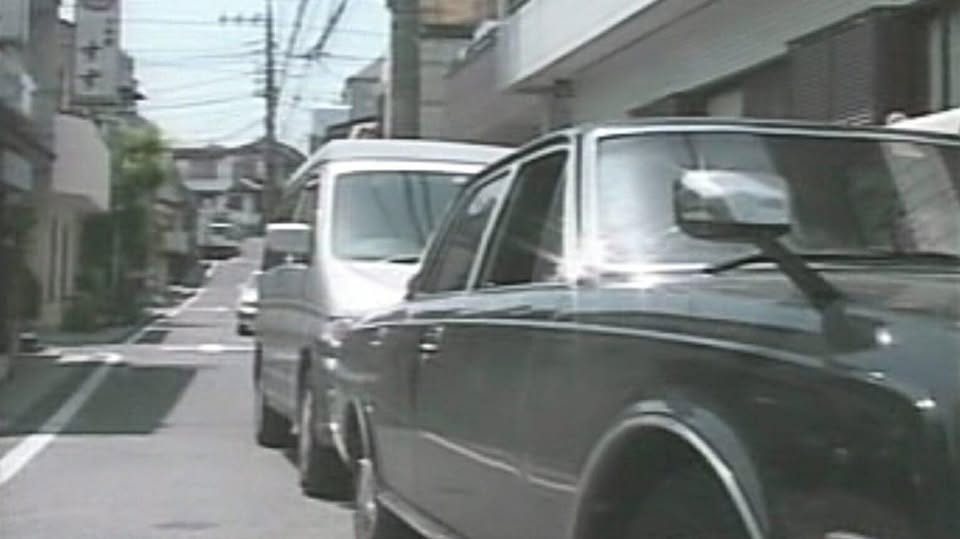
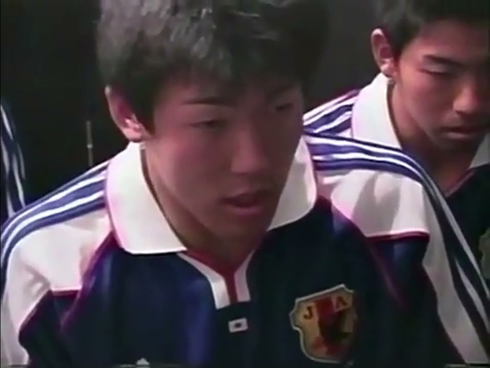

追撞事故後的黑色終局
比賽結束之後回家路上的足球部員們。也許是因為過於疲憊，不幸追撞了黑色的高級車 。 對為了保護後輩而擔下全部責任的三浦，車主所提出的和解條件是…

當天下午1時11分，於世田谷區北澤發生的事故，徹底改變了接下來的發展 。 甲方谷岡俊一先生的 Century 轎車雖然受損，但他提出的補償方案卻超乎常理 。

責任承擔者：多田野數人 (三浦)
足球部成員，當天為了保護疲憊的後輩，毅然決然承擔了事故的所有責任，展現了前輩的風範。
甲方車主：谷岡俊一
黑色高級自小客車 (車號：TNOK-893) 的車主，提出「特殊要求」的暴力團團員。
車 禍 和 解 書
甲方：谷岡俊一 | 乙方：多田野數人
和解條件詳列：
- 乙方願以自身駕照作為抵押物，是日當場於甲方宅內乙方以裸身學狗吠三次供甲方觀賞 。
- 甲方有權變更或追加要求條件，亦有對於條件的最終解釋權 。
- 甲方若受乙方一轉攻勢，即乙方有能力使甲方取消要求並取回駕照，則乙方不需負擔任何責任 。
- 乙方願無條件賠償甲方 1,145,141,919,810 元賠償金，若違反和解條件 。
備註：本件車禍之其餘民事請求均拋棄，甲方並不再追究乙方之刑事責任 。